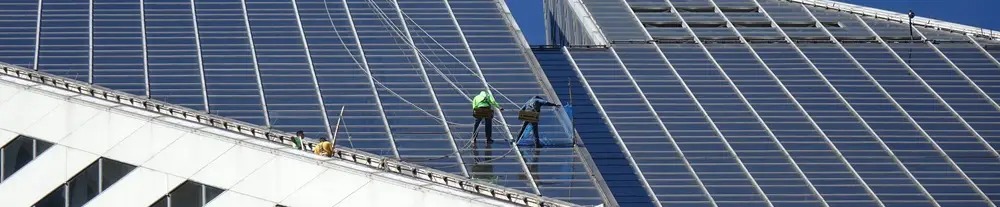

Cara Membersihkan Panel Surya Agar Listrik Optimal: Panduan Lengkap untuk Pemula

Energi terbarukan, seperti Pembangkit Listrik Tenaga Surya (PLTS), kini semakin populer di Indonesia. Banyak pemilik rumah dan pelaku industri mulai beralih menggunakan panel surya sebagai sumber energi alternatif yang ramah lingkungan dan efisien. Mungkin Anda salah satunya, yang memasang panel surya di atap rumah sebagai investasi jangka panjang atau sebagai cadangan saat listrik dari PLN padam.
Namun, untuk memastikan investasi Anda memberikan hasil yang maksimal, perawatan rutin mutlak diperlukan. Salah satu bentuk perawatan paling krusial adalah menjaga kebersihan permukaan panel surya. Artikel ini akan membahas secara lengkap mengapa pembersihan itu penting dan bagaimana cara membersihkan panel surya dengan benar dan aman.
Mengapa Membersihkan Panel Surya itu Penting?
Sama seperti jendela rumah yang akan kotor jika tidak pernah dibersihkan, permukaan panel surya juga rentan terhadap penumpukan berbagai jenis kotoran. Debu, pasir, daun kering, lumut, hingga kotoran burung yang menempel di permukaan panel dapat menjadi penghalang serius.
Begini cara kerjanya: Panel surya menghasilkan listrik dengan mengubah foton dari sinar matahari menjadi arus listrik melalui sel fotovoltaik (PV). Agar proses ini berjalan optimal, sel PV harus menerima paparan sinar matahari secara langsung dan maksimal.
Ketika lapisan debu atau kotoran menumpuk, ia berfungsi seperti tirai tipis yang menghalangi sebagian cahaya matahari untuk mencapai sel PV. Akibatnya, efisiensi panel surya akan menurun drastis. Studi menunjukkan bahwa panel surya yang kotor dapat mengalami penurunan output listrik antara 5% hingga 25%, bahkan lebih, tergantung pada tingkat kekotorannya. Dengan membersihkannya secara rutin, Anda memastikan panel bekerja pada kapasitas puncaknya.
Kapan Waktu Terbaik untuk Membersihkan Panel Surya?
Memilih waktu yang tepat untuk membersihkan panel surya sangat penting untuk keamanan dan efektivitas. Hindari membersihkan panel surya di bawah terik matahari siang hari. Ada dua alasan utama:
- Risiko Thermal Shock: Panel surya yang terpapar matahari langsung bisa menjadi sangat panas. Menyiramkan air dingin ke permukaan kaca yang panas dapat menyebabkan kejutan termal, yang berpotensi menimbulkan retakan mikro pada kaca pelindung panel.
- Air Cepat Menguap: Air akan menguap dengan sangat cepat pada permukaan yang panas, meninggalkan bekas noda air atau residu sabun yang justru akan kembali menghalangi sinar matahari.
Waktu terbaik untuk melakukan pembersihan adalah pada pagi hari saat panel masih dingin atau pada sore hari ketika suhu panel sudah menurun.
Panduan Lengkap Cara Membersihkan Panel Surya di Rumah
Membersihkan panel surya tidaklah sulit, tetapi memerlukan teknik yang benar agar tidak merusak permukaannya. Berikut adalah panduan langkah demi langkah yang bisa Anda ikuti.
Peralatan yang Dibutuhkan:
- Air Bersih: Gunakan air dengan tekanan rendah. Hindari penggunaan jet spray bertekanan tinggi.
- Sikat atau Wiper Berbahan Lembut: Gunakan sikat dengan bulu yang sangat lembut atau wiper karet (squeegee) khusus jendela.
- Kain Mikrofiber: Sangat baik untuk mengeringkan dan menghilangkan sisa noda tanpa meninggalkan goresan.
- Ember: Untuk menampung air bersih.
- Cairan Pembersih Khusus (Opsional): Jika ada noda membandel, gunakan sabun atau pembersih yang direkomendasikan untuk panel surya. Hindari deterjen keras atau bahan kimia abrasif. Pembersih kaca bisa menjadi alternatif untuk noda spesifik.
Langkah 1: Pembersihan Debu dan Kotoran Ringan
Metode ini cocok untuk perawatan rutin jika panel hanya tertutup debu tipis.
- Basahi Permukaan: Semprot permukaan panel surya secara perlahan menggunakan selang air bertekanan rendah. Tujuannya adalah untuk melunakkan dan mengangkat debu serta kotoran ringan.
- Sikat dengan Lembut: Gunakan sikat dengan gagang panjang yang lembut untuk menyapu sisa kotoran dari atas ke bawah. Lakukan dengan gerakan yang searah dan tanpa tekanan berlebihan.
- Bilas Hingga Bersih: Semprot kembali seluruh permukaan panel untuk membilas sisa kotoran yang telah disikat.
- Keringkan (Opsional): Untuk hasil terbaik dan bebas noda air, keringkan permukaan menggunakan wiper karet (squeegee) atau kain mikrofiber.
Langkah 2: Mengatasi Noda Membandel (Seperti Kotoran Burung)
Menurut pengalaman Mas Tukang, satu titik kotoran burung dengan luas 3x3 cm dapat mengurangi daya panel surya hingga 10 watt pada saat matahari terik. Kotoran burung atau getah pohon seringkali lebih sulit dihilangkan dan memerlukan perhatian ekstra.
- Pastikan Panel Tidak Panas: Sekali lagi, lakukan proses ini pada pagi atau sore hari.
- Bersihkan Debu Kering Terlebih Dahulu: Gunakan kemoceng atau sikat kering untuk menghilangkan debu sebanyak mungkin sebelum menggunakan air.
- Fokus pada Noda: Untuk noda yang membandel seperti kotoran burung yang sudah mengering, semprotkan sedikit air atau cairan pembersih kaca langsung ke titik noda. Diamkan selama beberapa saat agar noda menjadi lunak.
- Gosok dengan Hati-hati: Gunakan kain mikrofiber atau spons lembut untuk menggosok area noda secara perlahan hingga terangkat. Jangan pernah menggunakan benda tajam atau sabut gosok yang kasar karena akan merusak lapisan anti-reflektif pada kaca panel.
- Lanjutkan Pembersihan Menyeluruh: Setelah noda membandel hilang, Anda bisa melanjutkan dengan menyemprotkan pembersih secara merata ke seluruh panel.
- Lap Hingga Kering dan Mengkilap: Gunakan kain mikrofiber yang bersih untuk mengelap seluruh permukaan hingga kering sempurna. Panel yang bersih dan mengkilap adalah tanda bahwa pekerjaan Anda berhasil.
Video Praktek Membersihkan Panel Surya
Cara Mas Tukang membersihkan panel surya di rumah dapat dilihat pada video pendek di bawah ini:
Kesimpulan: Investasi Kecil untuk Hasil Maksimal
Membersihkan panel surya sendiri di rumah ternyata mudah, bukan? Dengan melakukan perawatan rutin ini, Anda tidak hanya membuat panel surya terlihat lebih kinclong, tetapi yang terpenting adalah Anda memastikan panel dapat menyerap cahaya matahari secara maksimal tanpa halangan.
Anggaplah ini sebagai investasi waktu dan tenaga yang kecil untuk mendapatkan pengembalian yang besar, yaitu produksi listrik yang lebih optimal dan tagihan listrik yang lebih hemat. Anda tidak perlu menambah jumlah panel untuk meningkatkan hasil listrik; cukup dengan rajin merawat kebersihannya. Semoga panduan ini bermanfaat!